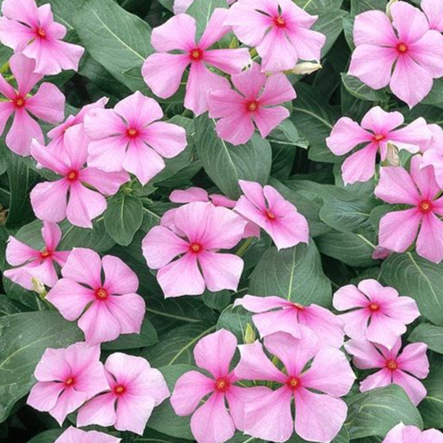

sakura
بحث:
 3.00$ - عباد الشمس
3.00$ - عباد الشمس
.jpg) 2.00$ - القرنفل
4.00$ - الجهنميه
3.20$ - الجيسوفيليا
2.00$ - القرنفل
4.00$ - الجهنميه
3.20$ - الجيسوفيليا
 0.99$ - الورد بلدى
0.99$ - الورد بلدى
 1.20$ - الورد الأبيض
1.20$ - الورد الأبيض
 1.50$ - الورد الأزرق
1.00$ - الورد الأحمر
1.50$ - الورد الأزرق
1.00$ - الورد الأحمر
 0.50$ - الياسمين
0.50$ - الفل
0.50$ - الياسمين
0.50$ - الفل
.jpg) 1.79$ - التوليب
1.79$ - التوليب
.jpg) 6.90$ - الهيبسكس
6.90$ - الهيبسكس
 1.25$ - زهور الفرح
1.25$ - زهور الفرح
 3.20$ - ورد البتونيا
0.70$ - البابونج
5.00$ - اللافندر
3.20$ - ورد البتونيا
0.70$ - البابونج
5.00$ - اللافندر
0.75$ - الجزانيا
2.20$ - الخشخاش
 7.50$ - السوسن سبوريا
7.50$ - السوسن سبوريا
 3.25$ - عصفور الجنه
3.25$ - عصفور الجنه

0.60$ - الونكة
4.15$ - الجاردينيا
 1000.00$ - السوسن الأسود
1000.00$ - السوسن الأسود
 2.90$ - زهور ألسترويمريا
2.90$ - زهور ألسترويمريا
2.35$ - غاليكا
 2.30$ - زهور النرجس
2.30$ - زهور النرجس
 3.60$ - زهور الهيدرانجا
3.60$ - زهور الهيدرانجا
 4.25$ - شقائق النعمان
4.25$ - شقائق النعمان
0.95$ - الفريسيا
 2.85$ - زنبق الياقوت
2.65$ - زهور الاستر
2.85$ - زنبق الياقوت
2.65$ - زهور الاستر
 10.99$ - ورد البوربون
10.99$ - ورد البوربون